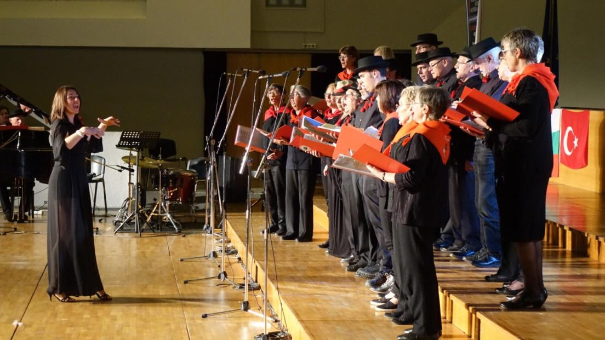
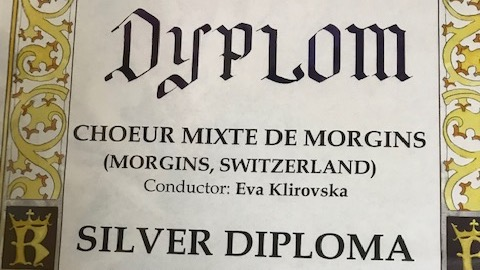

I am devoted to conducting my choirs. Besides gospel, classical and popular repertoire, we work a lot on vocal techniques. Weekly rehearsals, concerts, festivals and masses are the great opportunities to unite with the passionate people who love music!
Choirs
1999-2000: Madrijazz, Lausanne, VD
2000-2007: Savièse Chante, Savièse, VS
2000-2002: Polyphonia, Vernayaz, VS
2005/2006: Accroches-chœur, Massongex, VS
2007: Chœur Espérance, Troistorrents, VS
2010: Chœur Mixte de Morgins, VS
2014: St-Cécile Chœur d’Hommes, Val d’Illiez, VS
Performances
Christmas concert at the church of Monthey
(December 2016 - Monthey, Switzerland)
Musical Comedy International Choir Festival

Conducted Choeur Mixte de Morgins at various concert halls. (April 2017 - Thessaloniki, Greece)
International Choir Competition in Krakow

Won the Silver Diploma while representing Choeur Mixte de Morgins. (2014 - Krakow, Poland)